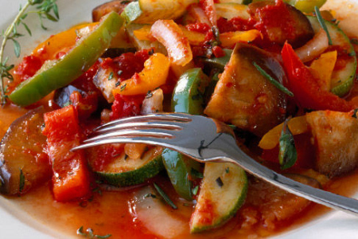
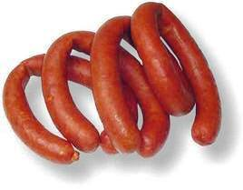
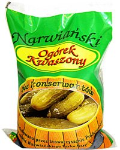

Wer
in Deutschland denkt, Gulasch w�re in Ungarn ein
Alltagsgericht, der irrt sich gewaltig. In manchen
Landesteilen kennt man Gulasch nur vom H�resagen, aber nicht aus
der eigenen K�che. Auch das in den Medien vielfach
hochgepriesene Paprikapulver aus der ungarischen Pu�ta hat
einen gewaltigen, s�dlich neigenden Bogen vom
Paprikaanbaugebiet in den s�d�stlichen Landesteilen in
Richtung Wien und Prag gemacht. �stlich und n�rdlich davon
kennt man Paprikapulver nur in den Restaurants, wo meistens
zugereiste K�che besch�ftigt werden. Die in Siebenb�rgen
lebenden, Ungarisch sprechenden Sekler verwenden unz�hlige Kr�uter in der
K�che, meistens aus dem eigenen Garten, aber nicht das
Paprikapulver.
Letscho bzw. Lecs� ist ein
Schnellgericht aus Zwiebeln, Tomaten und Paprikaschoten, das
man in unz�hligen Varianten kennt und laufend unterschiedlich zubereitet, je nach dem, was
man gerade zur Verf�gung hat in der K�che. Schnell und
vitaminreich kommt Letscho - als Hauptgericht oder Garnierung
- im Sommer fast t�glich auf den
Tisch. Wer eine Speisekammer hat, kocht Letscho f�r die
�brigen Jahreszeiten ein und so ist dieses Schnellgericht die
am h�ufigsten verzehrte warme Speise in Ungarn.
Letscho Basis / Lecs�
alap
Letscho
Basis aus Zwiebeln, Tomaten und
Paprikaschoten ist ein Grundrezept in der ungarischen
K�che, eine Grundlage f�r viele gulaschverwandte Gerichte. Es
gibt keine Vorschrift oder Tradition, ob man von den Tomaten oder
Paprikaschoten mehr verwendet. Das h�ngt davon ab, was die
Familie geschmacklich bevorzugt oder was man gerade zur
Verf�gung hat aus dem eigenen Garten. Beim Kochen kommt es auf
den Geschmack, auf eine landestypische W�rzmischung an, die
K�chInnen in Ungarn landesweit kennen und sich wesentlich vom
Geschmack deutscher Gulaschgrichte unterscheidet.
Mit einer Letscho Basis f�ngt man beim Kochen am
h�ufigsten an und je nach Gericht �ndert man den Fortgang der
Zubereitung. Beispiele:
Beispiel f�r
Gulaschsuppe: Auf einer Letscho Grundlage wird das
Fleisch landestypisch gew�rzt in viel Wasser gekocht und durch
die Zugabe einer bestimmten Mixtur aus Frischgem�se, wie 2-3
mal soviel Karotten wie Petersilienwurzel und evtl. ein
kleines St�ck aus einer Sellerieknolle, weitergekocht und
abschlie�end mit wenig Kartoffel, evtl. auch mit wenig
Zupfnudel, insgesamt mit wenig Inhalt angereichert, sodass die fertige Suppe noch immer
als sehr d�nn bezeichnet werden kann.
Beispiel f�r Ungarisches Gulasch bzw. P�rk�lt:
Im Fett von ausgelassenem Speck wird zuerst eine Letscho
Grundlage landestypisch gew�rzt zubereitet, das Fleisch darin
zum P�rk�lt anger�stet und karamellisiert
(=P�rk�lttechnologie) und durch
die Zugabe einer bestimmten Mixtur aus Frischgem�se, wie eine
Tomate, 2-3
mal soviel Karotten wie Petersilienwurzel und evtl. ein
kleines St�ck aus einer Sellerieknolle, weitgehend im
Fett, m�glichst ohne Wasserzugabe, evtl. im Bier oder Rotwein
weitergekocht und abschlie�end abgeschmeckt.
Beispiel f�r Serbisches Reisfleisch bzw. B�cskai
Rizsesh�s:
Im Fett von ausgelassenem Speck wird zuerst eine Letscho
Grundlage landestypisch gew�rzt zubereitet, Hackfleisch,
Flecken bzw. Naturschnitzel oder H�hnerklein darin zum P�rk�lt
anger�stet und karamellisiert (=P�rk�lttechnologie). Nach der
Beimgabe von 1-2 Tomaten wird der Reis dazugemischt und alles
zusammen gar gekocht und am Ende etwas anger�stet.
Das Einkochen einer Letscho Basis im Sommer dient einem
weiteren Zweck, wenn Paprika und Tomate in gro�en Mengen
preisg�nstig und frisch erh�ltlich sind. Die Sommerfrische ist
eine wesentliche Notwendigkeit gulaschverwandter Gerichte in
Ungarn.
Letscho / Lecs�
Letscho
pur ist ein Schnellgericht aus Zwiebeln, Tomaten und Paprikaschoten
- eine vegetarische Sauce
mit mehr oder weniger Inhalt. In bzw. zum Letscho geh�ren
jedoch allerlei Fleischprodukte, die man eventuell zur Verf�gung
hat. Der Sud �hnelt zwar der in
Deutschland bekannten Zigeunersauce, die man aber in Ungarn
nicht kennt.
Letscho wird in Ungarn mit
edels��em Paprikapulver weniger brutal gew�rzt, als die
Zigeunersauce.
Letscho wird im ungarischsprachigem Raum als
Nationalgericht betrachtet. Das
Wort Lecsó stammt aus der Sprache der Zigeuner bzw. Roma und bedeutet
eine fleischlose Gulaschvariante aus den zwingenden
Bestandteilen Zwiebeln, Tomaten und
Paprikaschoten. Letscho wird vor allem im Sommer fast jeden Tag
gekocht. Variantenreich ist Letscho trotzdem durch die
Zugabe unterschiedlicher Gem�sesorten, je nachdem, was und wieviel
man davon gerade zur Verf�gung hat
- beispielsweise Zucchini und Auberginen, wie am Bild
rechts.

Obwohl in Ungarn Letscho als Nationalgericht betrachtet
wird, kennt man das popul�re Sommergericht in den benachbarten
L�ndern ebenso. Im folgenden Video bezeichnet man Letscho als
Betjaren Paprikasch, was noch klar ungarisch klingt,
aber Satarasch ist ein serbisches Wort f�r das gleiche
Gericht. Das folgende Video ist das beste von denen, was wir
bei YouTube finden konnten. Es zeigt die Zubereitung von Letscho nach dem
Grundrezept:
Vermerk: Dieses Video ist
offensichtlich eine Werbung f�r keramikbeschichtete Pfannen.
Deswegen wird die Zubereitung von Speigelei gezeigt.
Normalerweise ist das Ei ein Bindemittel im
Letscho-Rezept. Tomaten kocht man mindestens eine Stunde
lang f�r den
ordentlichen Tomatengeschmack. In guten Restaurants k�chelt
man die Spaghettisauce mindestens 4 Stunden lang, sp�t
abends oder nachts vor dem Verzehr. Die Paprikastreifen sollte
man kurz, nicht l�nger als 5-10 Minuten lang anbraten, bis sie mundgerecht weich geworden sind
- aber die K�che soll von Haus zu Haus unterschiedlich
bleiben.
Letscho
wird unterschiedlich serviert:
Letscho wird zu
Hause bei Mama meist nur mit Brot als Hauptgericht serviert oder mit
Eiergraupen, Reis,
selten mit Salzkartoffeln. Letscho pur ist kalorienarm,
vitaminreich und daher ziemlich gesund. Zuhause gilt es als
Delikatesse, wenn die Sauce abschlie�end ein bischen mit Ei gebunden
und/oder eine Hartwurst darin gekocht wird.
Zuhause gilt es als vornehm, ein St�ck Letschowurst (Fleischwurst)
dasGericht verziert.
Beliebter sind Gyulaer Wurst oder Debrecziner (debreceni
p�ros). Letztere haben mit den bei Rewe und Penny
erh�ltlichen Paprikaw�rstchen nichts gemeinsam, auch wenn
sie hierzulande mit Debrecziner-Aufschrift angeboten
werden. Letscho wird bei Ilona in Wien
mit Paprika, Tomaten und weiteren saisonalem Gem�se so kulinarisch serviert,
wie am Bild rechts.
Dazu isst man am besten Wei�brot.
In
Restaurants wird Letscho meistens als Garnierung, z.B. zum Schnitzel serviert,
�hnlich wie die in Ungarn unbekannte Zigeunersauce in
Deutschland. Naturschnitzel, wie am Bild
rechts bezeichnen die Ungarn vom
�sterreichisch-donauschw�bischen Flecken abgeleitet als
"Flekni" - oft mit Reis, Nokedli (dt. Knobben)
oder wie hier mit Tarhonya (dt. Eiergraupen) garniert.
Speziell f�r Letscho geeignete Wurstsorten:
Letscho wird als vornehm betrachtet, wenn man ein St�ck
Wurst dazu kocht. Es z�hlt sogar, was f�r welche Wurstsorte
dazu gekocht wird. In Frage kommt vor allem eine ger�ucherte
Hartwurst, vorzugsweise hausgemacht und mehr oder weniger
scharf von Paprika. Eine bessere Hartwurst,
vor
allem die
Gyulaer Wurst
gilt als die Kr�nung aller Letschogerichte.
Debrecziner ist auch
gut, in letzter Zeit macht eine
neumodische, der Kochwurst �hnelnde
Letscho Wurst
die Runde. Von den meisten
beliebt ist jedoch "Fradi kolb�sz" (Bild
rechts), die heute nur noch
selten angeboten wird. Sie ist eine urspr�nglich polnische
Wurstsorte in Anlehnung an Kabanossi, die perfekt zum Letscho passt.
Die Bezeichnung "Fradi kolb�sz" entstammt aus
einem Spruch der Fussballfanatiker
des Sportklubs Ferencv�ros (fr�her Franzstadt, daher der
Spitzname Fradi): "mindent bele", d.h. "alles
hinein!" und so wei� ein jeder, was alles in der Wurst sein
kann.

Eine landestypische Beilage zum Letscho ist die
Sauerteiggurke:
Landesweit beliebteste
Beilagen sind die Sauerteiggurken (kovászos uborka) -
eine in Ungarn
beliebte Variante der Salz-Dill
Gurken, fast identisch mit den Spreewaldgurken bis zur Wendezeit, die unter der Bezeichnung
Polskie Og�rki weltweit beliebt sind. Auch wenn die Ungarn
stolz auf ihr "kov�szos" Sauerteiggurken sind, nicht
einmal das Wort kov�sz ist ungarisch, sondern slawischen
Ursprungs und so sind die
polnischen und russischen Sauerteiggurken weltweit beliebt und
erh�ltlich, wie z.B. am Bild rechts. �brigens: Die
Sauerteiggurken kennt man von Polen �ber Russland bis
zum Pazifischen Ozean und sind in den meisten deutschen
Lebensmittell�den in ganz Nordamerika erh�ltlich.

Das folgende Video zeigt die Zubereitung von Letscho mit Reis.
Zutaten und Zubereitung siehe unter dem Video:
Zutaten:
1 kg Paprikaschoten, 1/2 kg Tomaten, 2 Zwiebeln, 200 g Reis, 1
St. Hartwurst (am besten Gyulaer), Paprikapulver, 2 TL Salz,
50 ml Speise�l.
Zubereitung: 1. Die Zwiebeln in der Pfanne goldgelb d�nsten, 2.
Pfanne von der Platte nehmen, Zugabe der geschnittenen
Paprikaschoten, Tomaten und 2 TL Paprikapulver, 3. 1 TL
Salz zugeben, umr�hren und bei mittlerer Hitze 10 Minuten lang
bedeckt schmoren, 4. Zugabe der in Scheiben geschnittenen Wurst,
alles solange schmoren, bis die Tomatensauce dickfl�ssig wird, 5.
Reis in einem Topf mit Salzwasser kochen, anschlie�end sp�len
und abtropfen lassen, 6. Den Reis in der Pfanne zum
fertigen Letscho geben, verr�hren und einige Minuten lang
zusammenreifen lassen.
Tipp: Schon mit wenig Erfahrung
kann man den Reis mit dem halbfertigen Letscho so zusammen
kochen, dass beide gleichzeitig gar werden.
Zutaten und Zubereitung wurden hier gem�� Video angegeben.
�blicherweise kocht man Letscho statt Speise�l mit Schmalz,
wobei ein Teil davon aus kleingew�rfeltem R�ucherspeck/Bauchspeck stammen
sollte. Am Ende sollte man solange d�nsten, bis das Fett mit den
Tomaten schmierig zusammensteht. Dazu kann man notfalls mit
Tomatenmark aus der Tube nachhelfen, dann aber ein wenig
Zucker zugeben. Statt Zucker kann man zur Neutralisierung der
in den Tomaten vorhandenen Bitterstoffe 1-2 in Scheiben
geschnittene Mohrr�ben mitkochen. Wie man sieht, Letscho ist
variantenreich und er�ffnet ungeahnte Entfaltungsm�glichkeiten
in der K�che, denn zum Letscho geh�rt alles, was man gerade
zur Verf�gung hat.
Lecsófestivals
werden in
Ungarn landesweit fast flächendeckend veranstaltet.
Größere Lecsófestivals finden
z.B. in den
Ortschaften Balatonkenese,
Békéscsaba, Dabas, Dunakeszi, Esztár,
Esztergom,
Felnémet, Gajavölgy, Haláp,
Kaposvár,
Mezőfalva, Miskolc, Nagymegyeri, Révfülöp,
Székesfehervár, Szentes, Szigetmonostor, Tata,
Tatabánya und Vác statt. Auch die im Ausland
lebenden
Ungarn feiern ihre Lecsófestivals, wie im gesamten
Seklerland in
Rumänien und vielerorts in der Slowakei, wie z.B. in
Bratislava
(Pozsony), Banská Bystrica (Besztercebánya), Dunajská
Streda (Dunaszereda), Komarno (Komárom), Kosice
(Kassa), Nitra (Nyitra), Sturovo (Párkány) u.a.
Das folgende Video zeigt die perfekt deutsche Zubereitung von
Letscho, wie eine Sauce � la DDR als Beilage zu diversen
Fleischgerichten. Ein jeder
Ungar w�rde weinen, wenn er sieht, was einst aus dem ungarischen
Nationalgericht in Ostdeutschland erkoren wurde. Hier wird
lediglich eine Zigeunersauce zubereitet und nicht das, was man in
Ungarn unter Letscho als Hauptgericht versteht. Trotzdem
zeigen wir dieses Video, weil es zum Nachmachen und f�r
weitere Anregungen animieren soll:
Die Zutaten im Video: 750 g Paprikaschoten,
500 g Tomaten, 125 g Zwiebeln, 100 g ger�ucherter Speck, Salz,
Paprikapulver.
Konservierung ohne
Konservierungsmittel, d.h. durch Erhitzen bei Luftabschluss,
geh�rt in alte Zeiten, denken heute viele von der modernen
Lebensmittelindustrie geblendete Gro�stadtmenschen. Die
Aufkl�rung �ber die Wirkung der laufend neueren Geschmacks-,
S��ungs- und Konservierungsstoffe, worauf die moderne
Lebensmittelindustrie nicht verzichten kann, l��t aufhorchen.
- Einkochen konnten unsere Gro�m�tter, aber zum Leid der
Industrie k�nnen das viele unter uns auch heute noch.
In Ungarn werden Obstbrei und
Letscho am h�ufigsten eingekocht. Die Bedingung daf�r ist das
Vorhandensein einer Speisekamer und die Kenntnis der
Einkochmethode. Wie das unter h�uslichen Bedingungen heute
auch in einer Kleink�che geht, zeigt das folgende Video:
Zutaten/Beispielsmengen: 500 ml Speise�l oder
500 g Schmalz, 500 g Zwiebel, 5 kg Paprikaschoten, evtl. ein
Teil davon sch�rfere Sorten, 5 kg
Tomaten, 50 g Salz, evtl. 2 EL Paprikapulver.
Einkochen:
Zum Einkochen werden die
Glasbeh�lter bei Kochtemperatur sterilisiert. Ob in einem
kochend hei�en Wasserbad, im Backofen oder in einem
Mikrowellenherd, darauf kommt es nicht an, Hauptsache ist
eine m�glichst lang anhaltende hohe Temperatur.
Nach dem Bef�llen und Abschluss
der Gl�ser soll keine Luft im Glas bleiben.
Warm eingewickelt und gut
w�rmeisoliert dauert das Abk�hlen bis zu 2 Tage und dieser
W�rmezustand tr�gt wesentlich zum Gelingen der
Konservierung bei.
Beim Abk�hlen entsteht ein starker
Unterdruck in den Glasbeh�ltern, sodass der Deckel vom
Luftdruck fest auf das Glas gepresst wird, wenn Glasrand
und Deckel sauber sind. Ordentlich eingemacht, k�hl und
dunkel gelagert bleibt das Eingemachte bis zu 2 Jahre
haltbar.
Tipps:
Gl�ser in der Gr��e von 300-500 ml
sind gerade ideal f�r einzelne Kochvorg�nge f�r eine
Familie.
Gebrauchte Gl�ser zu sammeln ist
nicht nur f�r die Haushaltskasse n�tzlich, es ist zugleich
gut f�r die Umwelt.
Gef�llte Paprika /
T�lt�tt Paprika
Gef�llte Paprika sind weltweit bekannt. Die Zutaten und die
Zubereitung sind jedoch etwas anders und landestypisch in
Ungarn. - Das Rezept stammt von den nach Ungarn gesiedelten
Bulgaren (Bulgarkert�szek), die Anfang des 18. Jahrhunderts
massenhaft vor den am Balkan erneut zur�ckdr�ngenden T�rken in
die s�d�stlichen Teile von Ungarn gefl�chtet waren und dort
weitgehend von Gem�seanbau lebten. Sie haben damals den wei�en
Speisepaprika in Ungarn eingeb�rgert und f�llten diesen nach
dem folgenden Rezept, das sich in Ungarn landesweit
durchgesetzt hat. Urspr�nglich verwendeten sie sehr viel
Gr�nzeug in der F�llung, viele Kr�uter. Mit dem Vordringen des
Gew�rzpaprikapulvers in die ungarische K�che zu Ende des 19.
Jahrhunderts verschwanden die Kr�uter weitgehend aus der
F�llung, da sie vom Paprikapulver �bert�nt �berfl�ssig
geworden sind - zumindest in st�dtischen Gegenden und
Haushalten, wo Gew�rzpaprika h�her angesehen wird und die Versorgung mit
Kr�utern nicht immer klappt. So hat Gef�llter Paprika in
Ungarn eine extrem einfache Rezeptur mit wenigen Zutaten.
Im
folgenden ungarischsprachigen Video zeigen wir, wie Gef�llte
Paprika in weiten Teilen von Ungarn heute zubereitet wird. Die
Zutaten und Zubereitung beschreiben wir nach dem Video:
Zutaten im folgenden
Video: 1 kg Hackfleisch, 2-3 Zwiebeln, 2-3
Paprikaschoten, Pfefferpulver, edels��es Paprikapulver, 300 g
Reis, 1,5 Liter Passierte Tomaten, 3 Eier, 100 g Zucker, Salz, 4 EL
Mehl, Selleriebl�tter, 100 ml Speise�l. - Etwas Majoran geh�rt
vielerorts in die F�llmasse.
Zubereitung - F�llung: Reis wird in Salzwasser gekocht,
anschlie�end unter Wasserstrahl gewaschen und abgeseiht. In
einem Sch�ssel 1 kg Hackfleisch, 3 Eier, 4 TL Salz, 2 TL
Pfefferpulver, (falls gemacht) die angeschwitzten Zwiebeln und
den Reis zu einer Knetmasse verr�hren.
In einer Pfanne die Mehlschwitze
zubereiten, von der Herdplatte nehmen, Paprikapulver darin
verr�hren und den Topf mit Wasser auff�llen. Passierte Tomaten und
Wasser hinzuf�gen und weiterkochen. 5 EL Zucker und 2 TL Salz
hinzuf�gen.
Tipps:
Die Kochzeit ist weitgehend von
der Reissorte abh�ngig. Ob man den Reis ganz, teilweise
oder �berhaupt nicht vorkochen soll, dazu ben�tigt man
Erfahrung mit der verwendeten
Reissorte. Reis gibt es recht unterschiedlich, manche
ben�tigen l�ngere Kochzeit, als das Fleisch und wer meint,
der teuerste aus der Fernsehwerbung w�re f�r irgendetwas ideal,
der t�uscht sich meistens. Die billigsten chinesischen
Reissorten bekommt man kaum in Deutschland, weil diese
Pest f�r den Handel sind - billig und schmackhaft!
Wer es mag, m�ge - wie unsere
Vorfahren - Graupe statt Reis verwenden. Graupen m�ssen
getrennt vorgekocht und so in die F�llmasse gemischt werden.
Sie ben�tigen lange Einweih- und
Kochzeit, insgesamt bis zu 90 Minuten. Gemeint sind hier
gesch�lte Gerstenk�rner, sog. Perlgraupen.
�ber die Mehlschwitze im
Video scheiden sich die Geister. Die meisten m�gen sie nicht.
Es obliegt Ihnen, ob Sie die
gef�llten Paprikaschoten und die Fleischkl��e in einer
Tomatensauce in einem Zug fertigkochen oder so wie im Video,
zuerst im Wasser etwa 1/2 bis 2/3 der Kochzeit, mindestens 30 Minuten lang vorkochen
und mischen sp�ter Tomatenmark dazu.
Sollten Sie die Paprikaschoten und Fleischkl��e im Wasser
kochen, ist es sinnvoll, das Kochwasser nicht wegzukippen,
wie im Video, sondern eine konzentrierte Tomatensauce zum
Kochwasser mischen und weiterkochen. Der Sinn des Kochens
im Wasser besteht darin, dass eine Tomatensauce unten im
Topf kleben kann und daher das Kochen viel Aufmerksamkeit,
�fteres R�hren erfordert und man diese Zeit evtl. besser
nutzen kann., die man ianheftet und daher , je nach
Konzentration und- wie im Video - m�chten wir
dringend abraten.
Wir fanden unter den
deutschsprachigen Videos bisher nur die folgende Demonstration, die in
Ungarn der donauschw�bischen Zubereitung
der gef�llten Paprika am n�chsten kommt.
Zwei Bemerkungen
zum folgenden Video:
Die Methode ist praktischer, weil hier alles in einem Zug
in einem Topf zubereitet wird. Das Ergebnis mit viel
Gem�se ist sicherlich ges�nder, vor allem
Karottenliebhaber kommen auf ihre Kosten. Die M�hren
sorgen f�r die Neutralisierung der in den Tomaten
vorhandenen Bitterstoffe. Das tun die Ungarn mit viel Zucker,
weil er billig ist, die Kinder es so m�gen und wundern
sich, woher Diabetes und Karies kommen.
Die Kartoffeln sollte man doch in einem anderen Topf
kochen, denn die nur ca. 15 Minuten Kochzeit ben�tigen,
aber die
Fleischf�llung wird erst in einer Stunde fertig. Kocht man
den Reis vor, dann reichen ca. 45 Minuten Kochzeit.
Gulaschgerichte mit
Sauerkraut
Die nächsten drei Gulaschgerichte zeichnen sich durch die
Verwendung von Sauerkraut aus. Die Rezepte werden in Ungarn so
betrachtet, als wären sie landestypisch in
Siebenbürgen bzw. Seklerland (gemeint ist Erd�ly, etwas größer
als Siebenbürgen). Tatsache ist aber, dass diese
Sauerkrautgerichte auch in der türkischen
Küche fast genauso bekannt sind. Es liegt daher nahe, dass
die Rezepte wahrscheinlich von den Türken w�hrend der rd. 150 Jahre dauernden Besatzungszeit (endete
im Jahre 1686)
übernommen wurden.
Beim Zubereiten ist es wichtig, dass man beim Kochen das von den
römischen
Soldaten entdeckte, seit zweitausend Jahren bekannte Sauerkraut
unverfälscht verwendet. Das
kann jeder
ganz einfach herstellen: Kraut hobeln, mit Salz mischen, stampfen, anschließend im
Glas oder Tontopf ca. 3 Wochen lang
heranreifen bzw. gären lassen. Behälter
wegen der Gasbildung nicht ganz schließen. Ohne
Konservierungsstoffe ist dieses Sauerkraut nicht nur schmackhafter, sondern viel
preisgünstiger als gewerblich hergestelltes
Sauerkraut, nicht zu sprechen von Weinsauerkraut, das geschmacklich zu
den
Gulaschgerichten überhaupt nicht passt.
Optional kann
man Lorbeerbl�tter, Pfeffer- und
Korianderkörner, Kümmel, Dill, ferner Zwiebel- und
Apfelscheiben ins gehobelte Kraut mischen. - Wir wollen hier nicht
darauf eingehen, wie man das Sauerkraut bei Bedarf auch in zwei
Stunden zubereiten kann - wie in der
koreanischen Küche.
Bei den folgenden drei
Gerichten handelt es sich um Gulasch bzw. Pörkölt,
das mit Sauerkraut gekocht wird:
Szegediner
Gulasch, Seklerkraut / Sz�kelyk�poszta
Es ist in Ungarn ein
Pörköltgericht mit viel Inhalt, das abschließend
mit
Sauerkraut zusammen gekocht und daher ziemlich anders gewürzt
wird, als andere P�rk�lt- oder Gulaschgerichte. Im urspr�nglichen Rezept wird
Schweinshaxe und/oder Dicke Rippe im Sauerkraut gekocht.
Warum das Seklerkraut in Deutschland
Szegediner Gulasch hei�t, dar�ber kann man nur spekulieren.
Prospekteschreiber dichteten diverse Geschichten hier�ber und
sogar der Gourmetkoch Gundel erfand eine zu Ehren eines seiner
G�ste. Fakt ist, dass dieses Gericht schon in der t�rkischen
Besatzungszeit in Ungarn bekannt war und das Gericht auch
heute noch bei den T�rken bekannt ist, allerdings nicht so
scharf mit Paprika gew�rzt, wie in Ungarn seit der 19./20.
Jahrhundertwende, als in Ungarn das Paprikapulver von einem
Paprikam�hlenbesitzer in die ungarischen Kochrezepte
hineingemodelt wurde. Szegediner Gulasch ist in Ungarn ein
Pörköltgericht mit viel Inhalt, das abschließend
mit
Sauerkraut zusammen gekocht und daher ziemlich anders gewürzt
wird, als andere P�rk�lt- oder Gulaschgerichte. Im urspr�nglichen Rezept wird
Schweinshaxe und/oder Dicke Rippe im Sauerkraut gekocht.
Die glaubw�rdigste Fabelgeschichte
�ber die Szegediner Herkunft dieses Krautgerichtes bezieht
sich auf einen Soldat aus Sachsen, der im Jahre 1918 zu
Kriegsende auf dem Heimweg aus Siebenb�rgen kommend in
Szegedin in einem Restaurant Seklerkraut bestellte, aber
nicht bezahlen konnte. Zur Strafe musste er das Rezept
hundertmal abschreiben und es dabei in den Himmel loben, schlie�lich musste er
versprechen, dass er das Rezept in Sachsen in Gastst�tten
verteilt. Irgendwie stimmt der Zeitpunkt mit dem Bekanntwerden
des Szegediner Gulasch in Sachsen �berein...
In Budapest kursieren
andere Ger�chte �ber die Erfindung dieses Gerichtes im Jahre 1848 durch den
Schriftsteller J�zsef Sz�kely in dem Budapester Restaurant
"Arany Sas". Allerdings ist diese Geschichte so ziemlich
sp�t erfunden worden, denn das Seklerkraut war schon lange
identisch mit Bigos, dem polnischen Nationalgericht aus viel
fr�heren Zeiten, als Ungarn und Polen noch gemeinsame K�nige
hatten. Das war jedoch einige Jahrhunderte vor dem Literat
J�zsef Sz�kely,
dem Namensvetter dieses Gerichtes.
Die gemeinsamen polnisch-ungarischen K�nige, die aus Ungarn K�nig geworden waren,
kamen fast alle aus Siebenb�rgen, dem Seklerland, wo dieses
Gericht zu den ungarischen oder den Nationalgerichten der
Sekler zuzuschreiben ist. Sz�kely
ist ein h�ufiger Familienname in Ungarn. Die nachtr�gliche
Benennung dieses Gerichtes nach diesem Literaten durch Karl Gundel ist nicht von der
Hand zu weisen. H�tte der Literat dieses Gericht tats�chlich erfunden,
dann m�sste das Gericht Gulasch nach Art von Sz�kely (Sz�kely
m�dra) bezeichnet werden, aber sowas ist vor uns keinem Koch
oder Prospekteschreiber
aufgefallen, nat�rlich nicht bei Gundel, von wo diese Geschichte verbreitet wird. Der
Gourmetkoch Gundel schrieb zwar einige
hoch beachtliche Kochb�cher, verbreitete aber eine Unwahrhei
nach der anderen �ber die ungarische K�che.
Gundel �bernahm angeblich vom 25j�hrigen Dichter Petőfi die Geschichte
�ber das Seklerkraut nach dem 22j�hrigen Dichterkollegen
J�zsef Sz�kely ohne Quellennachweis und da entpuppt sich diese
Geschichte allein schon dadurch, dass das Restaurant
"Arany Sas" damals dem Herrn Karl Gundel geh�rte. Eigenwerbung, die in den
Himmel stinkt!
Der hoch angesehene
Gourmetkoch und Schreiber von Kochb�chern Karl Gundel haderte vor allem mit
dem Paprikapulver, das damals von dem
Paprikam�hlenbesitzer J�nos Kot�nyi in die ungarischen
Kochrezepte gemogelt wurde. Gundel
selbst umwandelte so viele ungarische Kochrezepte
"kulinarisch" mit Sauerrahm, wie nur m�glich und das f�llt vor allem
beim Seklerkraut auf. Diesen
Unterschied zum Bigos gibt es seit Ende des 19. Jahrhunderts,
seit dem Wirken von Gundel. Auch die Polen k�nnten
Bigos mit Sauerrahm abrunden, tun es aber bis heute nicht. Wahrscheinlich aus dem einfachen Grund: Sauerrahm gilt zwar
als fein in vermeidlich hochkar�tigen Restaurants, �bert�nt jedoch die
unz�hligen feinen Ger�che, die in der W�rzmischung zum Bigos
und Seklerkraut lauern - und das ist �berhaupt nicht fein!
Auf die gr��ten Fehler von Gundel m�chten
wir hinweisen, die er in seinen B�chern verbreitete. - Seine
hoch angesehene Klassifizierung von Gulasch-, P�rk�lt-,
Tokanjer- und Paprikaschgerichten ist total falsch! Tokanjer
ist n�mlich der Vorg�nger von allen Gulaschgerichten,
urspr�nglich ohne
Paprikapulver. Erst seit Gundels Kochbuch wird Tokanjerfleisch
in Streifen geschnitten, aber darauf kommt es nicht an. Kesselgulasch und P�rk�lt sind keine sich
gegenseitig ausschlie�ende Begriffe. P�rk�lt bezieht sich auf
die P�rk�lttechnologie und nicht auf ein bestimmtes
K�chengericht. P�rk�lt wird in der Puszta in Kesseln gekocht
wie Gulasch in der Gulschkanone. Einen Unterschied zwischen P�rk�lt und Suppe
ergibt sich aus der Menge der verwendeten Kochfl�ssigkeit.
Wenn man die Suppe anders w�rzt, als ein Tellergericht, das ist
eine andere Frage. P�rk�lttechnologie bezeichnet die Art und Weise, wie man Fleisch
mit Zwiebeln, Gew�rzen - darunter Paprikapulver - und weiteren,
m�glichst vielen
Gem�sesorten im Fett karamellisiert. Wird nicht so
karamellisiert, ist das Gericht kein P�rk�lt, unabh�ngig
davon, ob das Essen eine Suppe oder ein Tellergericht ist.
Dieses Gericht wird von den Ungarn
Székelykáposzta genannt. Die Ungarndeutschen, so auch die Siebenb�rger Sachsen
bezeichnen es als Seklerkraut (Das Seklerland ist gr��er als Siebenb�rgen im heutigen
Rum�nien). Szeged liegt ziemlich anderswo auf der
Landkarte, trotzdem hat diese
Landesspezialität aus dem Seklerland eine Szegediner Bezeichnung in
Deutschland, weil ein fahnenflüchtiger Soldat
aus Sachsen im
ersten
Weltkrieg, das Rezept in einem Lokal in Szeged
bzw. Szegedin als Strafe hundertmal abschreiben und anschließend dem Wirt
auch
noch einen Vers über
dieses Gericht dichten musste, weil er das Essen nicht bezahlen
konnte. - Wie auch immer, dieser Soldat nahm das Rezept mit in die Heimat und machte das Seklerkraut zuerst im
Dresdner Raum als Szegediner Gulasch populär. Im folgenden beschreiben wir
zuerst das Originarezept aus Ungarn und zeigen danach, wie das
Gericht heute von den Rum�nen zubereitet wird. Im Originalrezept
wird das Seklerkraut von den
Seklern mit Schweinshaxe zubereitet und so ist das Seklerkraut
in Bayern als Szegediner Gulasch bekannt - Sie kennen schon
den Weg - Bayern ist mit Sachsen benachbart....
Zutaten f�r 6 Personen:
1 kg Schweinsschulter oder Bauchfleisch, ausgel�st oder mit
Schwarte, 4 EL Schweineschmalz oder Speise�l, 100 g Zwiebeln,
15 g edels��es Paprikapulver, 1/2 kg Sauerkraut, 3 zerdr�ckte
Knoblauchzehen, Salz, schwarze Pfefferk�rner, 2 TL K�mmel, 1
Lorbeerblatt, 10 g Mehl, 1/8 l
Sauerrahm, 3/4 l Suppenbr�he
oder Wasser. Wird in gro�er Menge gekocht, dann geh�ren 1-2
Lorbeerbl�tter und 3-4 Wacholderk�rner ins Sauerkraut.
Wichtig: die letzten 20 Minuten sollte man unbedingt
geräuchertes
Fleisch mitkochen. Hierfür eignet sich am besten Gyulaer Wurst
oder auch Kabanossi, ferner
geräucherte Rippen, Schwarzw�lder oder
Katenschinken.
Zubereitung:
Das Fleisch in ca. 3 cm gro�e W�rfel schneiden. Kleingehackte
Zwiebeln in Schmalz oder �l anlaufen lassen, Paprika dazugeben
und sofort mit etwas Wasser abl�schen. Das Fleisch dazugeben
und salzen. Mit Wasser oder Suppenbr�he �bergie�en. Zugedeckt
ca. 45 Minuten d�nsten.
Sauerkraut,
K�mmel, Pfeffer, Lorbeerblatt und Knoblauch hinzuf�gen.
Nochmals 30-40 Minuten garen. Nach Bedarf Fl�ssigkeit evtl.
s��lichen Wei�wein untermengen. - Lorbeerblatt entfernen und
mit Sauerrahm garnieren.
Unser Tipp:
In einem Schnellkochtopf das gewaschene Sauerkraut u.a.
zusammen kochen. Kochzeit ca. 30 Minuten. So bleiben mehr
Vitamine erhalten, das Essen schmeckt intensiver und man spart
viel Zeit.
Serviervorschlag:
Aufgetischt
wird mit Salzkartoffeln und es sollte jedem überlassen werden,
ob und wenn
schon, dann wie viel Sauerrahm
auf das Kraut
träufelt.
Das folgende Video zeigt die perfekt deutsche Zubereitung von
Szegediner Gulasch
in der DDR:
Die Zutaten im Video: 600 g Schweineschulter,
300 g Zwiebeln, 60 g Margarine, 10 g rosenscharfes
Paprikapulver, Salz, Pfeffer, K�mmel, 1 Knoblauchzehe, 500 g
Sauerkraut, 125 ml
Sauerrahm, etwas Mehl zum Binden.
An dem etwas Kulinarisches andeutenden Teller sehen wir Szegediner
Gulasch, wie dieses Gericht dem Originalrezept
entsprechend zubereitet und mit Polenta serviert wird. Szegediner Gulasch wird in Bayern ganz �hnlich auf b�hmische Art mit Kn�deln
serviert.
Bei den Rum�nenwurde Schweinshaxe im
Sauerkraut gekocht und in diesem Fall mit Mamaliga serviert.
Mamaliga ist Rum�nisch, bedeutet Polenta und wird auf
Ungarisch Puliszka genannt. Puliszka ist eine gesalzene
Variante von Grie�brei aus Maismehl und gilt in l�ndlichen Gegenden
als Tierfutter und daher als Armutszeichen f�r Menschen. Polenta geh�rt
trotzdem in vielen Landstrichen europaweit zu den
regionalen Landesspezialit�ten, nicht nur in Rum�nien, sondern
auf dem gesamten Balkan, ferner in der Steiermark oder auf den Einsiedlerh�fen in den
Hochlagen der franz�sischen, italienischen und schweizerischen Alpen.
Maisbrei wird in "Sankt Eiermark" T�rkenscherz genannt, was
einen Hinweis auf den wahrscheinlichen Ursprung dieser Beilage
im Steiermark liefert.
�brigens: Trotz anders lautender Behauptung
von Wissenspantscher Wikipedia, Polenta, Mamaliga, Puliszka
oder T�rkenscherz sind identische Beilagen, alle werden aus
Maisbrei hergestellt. Einen Unterschied gibt es in der
Zubereitungstechnologie und wie die K�che von Haus zu Haus
unterschiedlich ist, so werden die unterschiedlich genannten
Beilagen aus Maisbrei so oder so gew�rzt - hier und da sogar
als Hauptgericht verzehrt.
Gelegtes Kraut /
Rakott k�poszta
Die kulinarische Kr�nung aller Gulaschgerichte
Am
Heiligabend isst man in Ungarn nach der Karpfensuppe entweder Wiener
Schnitzel, Gelegtes oder
Gefülltes Kraut. Spätestens nach dem Heiligabend wird
überall ein Krautgericht f�r 4-5 Feiertage zubereitet und wenn
man viele
Gäste erwartet, notfalls nachgekocht - auch noch zur Jahreswende.
Je �fter die Krautgerichte erw�rmt werden, umso besser schmecken
sie, weil das Kraut zum Weichwerden wesentlich mehr
Kochzeit ben�tigt, als alle anderen Zutaten. Das gilt zwar nicht beim Gelegten Kraut, weil Reis und
P�rk�lt dadurch austrocknen,
man kann aber mit P�rk�ltfl�ssigkeit, Fleischbr�he o.�. nachhelfen.
Gelegtes Kraut ist vergleichbar mit dem Szegediner Gulasch,
kommt jedoch aus dem Backofen.
Zutaten f�r 4 Personen: 1 kg Sauerkraut,
200 g Reis, fertiggekochtes P�rk�lt bzw. Gulasch aus 5oo g
Fleisch, 200 g Sauerrahm,
2 Lorbeerbl�tter, 2 Prise Majoran.
Vorbereitung: Zuerst wird ein P�rk�lt bzw.
Gulasch ohne oder mit wenig Gem�se gekocht - sogar die
Zwiebeln kann man weglassen. In einem anderen Topf wird Reis
in Salzwasser oder Fleischbr�he fertig gekocht.
Zubereitung: Die H�lfte vom Sauerkraut wird
in einer Backpfanne ausgebreitet und die 2 Lorbeerbl�tter
darin gesteckt. Zuerst wird gekochter Reis dar�ber gelegt,
mit Majoran bestreut und mit dem fertiggekochten P�rk�lt bzw. Gulasch
bedeckt. Nun wird alles mit dem restlichen Sauerkraut
bedeckt und mit dem Sauerrahm betr�ufelt, anschlie�end je
nach H�he der gelegten Schichten bei 180-200 �C 45 Minuten
lang �berbacken.
Tipps: Unsere Angaben beziehen sich auf das
Grundrezept. Gelegtes Kraut wird jedoch von Haus zu Haus anders gemacht,
weil ein jeder andere Zutaten bevorzugt. Das Gulaschfleisch kann man durch
Hackfleisch ersetzen. Im Gulasch werden oft Bauchspeck-
und/oder Hartwurstw�rfel mit gekocht. Das Gulasch und das
gesamte Gericht soll, wenn �berhaupt, wenig Paprikapulver
enthalten. Majoran und evtl. K�mmel, Petersiliengr�n u.a.
sollen bestimmte Aromen entwickeln. Wenn man das einmal gemacht hat, hat man
eigene Ideen
genug f�r weitere Entfaltungsm�glichkeiten f�r diese
K�chenspezialit�t.
Gelegtes Kraut wird bei
Ilona in Wien so
serviert, indem man vom P�rk�lt zwar etwas erspart, daf�r aber mit einer passenden
Hartwurst
kulinarisch nachgeholfen wird - wie zuhause bei Mama:
GELEGTES KRAUT - Das Gundrezept in einem
englischsprachigen Video - Hinweise unten beachten:
Gebacken wird 45 Minuten lang bei 180�C. Wie schon genannt,
statt Gulaschfleisch kann man Hackfleisch ebenso verwenden
und das erspart viel Zeit in der K�che.
Gelegtes Seklerkraut /
Rakott sz�kelyk�poszta
Gelegtes Kraut auf Siebenb�rger bzw. Sekler Art. Die K�che
der Sekler bzw. Sz�kely (ein ungarischer Stamm in Siebenb�rgen, heute
Rum�nien) kann als traditionell ungarisch
betrachtet werden, eher als die K�che in Ungarn. Das erkennt man zuerst daran, dass
dort mit viel Frischgem�se (meist aus dem eigenen Garten in
dieser l�ndlichen Gegend) gekocht wird und der Paprika noch
keinen Einzug in die K�che der Sekler fand. Die Gerichte
sind zudem einfacher in der Zubereitung und das Gute daran
ist, dass man zu den Zutaten gew�hnlich keine Mengenangaben
macht. Meistens kocht man daraus, was man soeben zur
Verf�gung hat.
Zubereitung:
In einem Topf m�glichst viele
Zwiebeln grob hacken, glasig anr�sten, das gewaschene
Sauerkraut dazu geben und unter einem Deckel d�nsten.
In einem anderen Topf den Reis
kurz anr�sten, mit Wasser �bergie�en und fertigkochen.
2 gro�e Zwiebeln glasig
anr�sten, Gulaschfleisch zugeben und unter st�ndigem R�hren
anbraten, mit Salz und frischem Bohnenkraut (oder
Pfefferpulver) w�rzen.
In einer Bratpfanne oder
R�mertopf zuerst eine Schicht vom zubereiteten Kraut
ausbreiten, eine Reihe Reis und dar�ber eine
Hackfleischschicht legen. Je nach vorbereiteter
Menge, die Backpfanne mit den einzelnen Schichten
wiederholt bedecken.
Abschlie�end die Pfanne mit viel Sauerrahm
�bergie�en, sodass dieser m�glichst tief im Bratgut
versinkt.
Bei 170 �C je nach
Menge und Gef�hl eine bis anderthalb Stunden lang
�berbacken.
Wie schon bei der Grundversion f�r Gelegtes Kraut genannt,
kann man Geschnetzeltes, Gefl�gel- oder Hackfleisch ebenso verwenden -
und das erspart viel Zeit in der K�che.
Vermerk: Es gab einen Versuch von Gourmetkoch Gundel, die
Erfindung dieses Gerichtes einer bestimmten Person
zuzuschreiben, dessen Familienname Sz�kely, von Beruf Schauspieler und
ein h�ufiger Gast bei Gundel war. Diese M�r h�lt weiterhin an,
weil die Schriften von Gundel auch heute noch gelesen,
abgekupfert und unbedacht zitiert werden. - Sz�kely ist ein h�ufiger Familienname in Ungarn,
allerdings stammt die Rezeptur dieses Gerichtes in
Siebenb�rgen aus einer wesentlich fr�heren Epoche, sogar die
T�rken kannten dieses Gericht vor fast vier Jahrhunderten, als der
Schauspieler Sz�kely noch lange nicht auf dieser Welt war. Die T�rken kennen das Seklerkraut, wahrscheinlich seit einer
Ewigkeit. Es liegt nahe, dass sie das Rezept mit nach Europa
brachten und erst danach zu diversen l�ndertypischen
Abwandlungen auf dem gesamten Balkan kam.
Gourmetkoch Gundel schrieb
eine Menge K�chenliteratur. Er besa� einige Restaurants in
Budapest, belieferte dort eine Reihe von vornehmen
Restaurants und einige Luxushotels. Karl Gundel jun. war in
der Tat mehr ein Gesch�ftsmann, als Koch. Sein Restaurant im
Stadtpark von Budapest hie� Wampetics, weil er und schon
sein Vater es nicht wagten, den gut bekannten (slawischen)
Namen des Restaurants zu �ndern. Erst auf
rechtsnationalistischen Regierungsdruck gab er nach und seit
1942 hei�t die Gastst�tte Gundel. Diverse Rezepte
verschiedenen G�sten zuzuschreiben war seine Fangmethode,
den Gast bei Laune zu halten und man muss schon sagen, er
machte sich und seine Literatur mit vielen unwahren
Behauptungen interessant, daf�r aber unglaubw�rdig. Das fing
schon mit seiner Klassifizierung von Gulasch, Gulaschsuppe,
P�rk�lt und Tokanjer an, als er Kesselgulasch, den Anfang
aller Gulaschgerichte offensichtlich noch nicht kannte...
Krautwickel bzw.
Gef�lltes Kraut / T�lt�tt k�poszta
Kohlroulade auf ungarische Art
Kohlroulade ist europaweit l�ckenlos bekannt, die
Spekulation �ber den Ursprung ist daher sinnlos. Bereits in
Ungarn gibt es regionale Unterschiede bei der Zubereitung,
umso mehr europaweit. Auf dem Balkan wird das Hackfleisch
auch in Wein- oder Meerrettichbl�tter gef�llt,
unterschiedlich gew�rzt, gekocht oder sogar gebacken. Wir
zeigen hier das in ganz Ungarn landestypische Grundrezept.
Das mit Fleisch gefüllte Kraut ist in Ungarn vor allem im
Winter ein typisches
Sonntags- oder Festessen. Beim Hochzeitsmahl werden im gleichen Topf
Sauerkrautgem�se und besondere, vorwiegend ger�ucherte Fleischstücke, wie
Schweinshaxe, Dicke Rippen, Hartwurst, G�nsekeule u.a. mitgekocht.
Am
Heiligabend isst man in Ungarn nach der Karpfensuppe entweder Wiener
Schnitzel, Gelegtes oder
Gefülltes Kraut. Spätestens nach dem Heiligabend wird
überall ein Krautgericht zubereitet und wenn
man viele
Gäste erwartet, kocht man bis zur Jahreswende nach.
Die Krautgerichte schmecken nach dem Wiederaufw�rmen besser,
je �fter aufgew�rmt, umso besser und sogar nach dem Einfrieren
wiederaufgew�rmt schmeckt es noch besser.
Gef�lltes
Kraut wurde erstmals im Jahre 1695 im dem Kochbuch "T�tfalusi
szak�csk�nyv" auf Ungarisch beschrieben. Das Rezept von
damals gilt auch heute noch landesweit als Grundrezept. T�tfalu liegt
heute in Slowenien, nah an der s�dwestlichen Grenze von
Ungarn. T�t nannten die Ungarn damals alle slawischen
V�lker, dementsprechend bedeutet T�tfalu heute zu Deutsch:
Slawendorf. T�t mit einem h als T�th geschrieben ist ein
h�ufiger Familienname in Ungarn und weist auf die oft nicht
mehr nachvollziehbare Herkunft von Familien hin. Obwohl die ungarische Kohlroulade slawischen
Ursprungs ist, die Einheimischen von T�tfalu, aber auch in
allen s�dlichen Pusztagebieten, ja sogar auf dem ganzen
Balkan bezeichnen die Kohlroulade als Sarma, dabei ist
dieses Wort t�rkisch. Vermerk: Bei T�tfalu endete die rd.
150j�hrige t�rkische Besatzungszeit zu Ende des 17.
Jahrhunderts.
Das Rezept in dem im
Jahre 1695 auf Ungarisch ver�ffentlichten Kochbuch "T�tfalusi
szak�csk�nyv" dient auch heute noch ungarnweit als Grundlage
f�r die Zubereitung der Kohlroulade nach ungarischer Art. Auf die wenigen Fortentwicklungen
wird im Folgenden hingewiesen.
Zutaten lt. Kochbuch aus dem Jahr 1695:
1 kleiner Kohlkopf, 1 kg
Hackfleisch von Lamm oder Schwein (aus Schulter, Keule, R�cken gemischt),
250 g Gerstenk�rner, 1 Ei, 1 EL wei�er Pfefferpulver, 1
Lorbeerblatt, 3 TL Salz.
Heute verwendet man sauren Kohlkopf aus einem Kohlfa�. Die
Donauschwaben und auch die Siebenb�rger Sachsen betrachten die Kohlroulade als ihr
Eigengew�chs, weil sie dieses Gericht zwar nach dem
ungarischen Grundrezept
zubereiten, aber die F�llmasse nach schw�bischer Art immer
in Suerkrautbl�ttern wickeln. Das ist heute in ganz
Ungarn gang und g�be.
Statt Gerstenk�rnern (Graupen) verwendet man heute Reis. Die Hackfleischf�llung enthielt
fr�her oft Mais, Gerste oder Hirse. Seit Anfang der
1950er Jahre in der roten �ra wurde Reis in Ungarn aus
wirtschaftlichen Gr�nden f�r die Eigenversorgung des
Landes gro�fl�chig angebaut. Seitdem sind 2-3
Generationen damit aufgewachsen und so ist die F�llung
der Kohlroulade bei den Magyaren heute nur noch mit Reis
vorstellbar.
5-10 Knoblauchzehen in der F�llmasse
machen das Gericht bek�mmlicher. Das ist �stlich der Donau
�berall �blich.
Die Donauschwaben
und Siebenb�rger Sachsen verwenden in der F�llmasse Majoran, evtl.
auch K�mmelpulver.
1-2
TL Paprikapulver im Kochtopf �ber die Rouladen gestreut ist sicherlich
eine regionale Entwicklung in den
Pusztagebieten, aber auch am gesamten Balkan. Die W�rze der
Rouladen
kommt aus Salz und Pfeffer, Paprika passt �berhaupt
nicht dazu, wird aber von m�chtegern K�chInnen aus anderen
Rezepten abgekupfert und vorsichtig in kleinen Mengen
dazugegeben, damit Paprika den Geschmack nicht ganz
verdirbt.
Zubereitung lt. Kochbuch aus dem
Jahr 1695:
Die
Kohlbl�tter einzeln entnehmen und die mittleren Blattadern
abflachen, damit die Bl�tter leicht biegsam werden. Die
Gerstenk�rner waschen.
Das Hackfleisch, die
Gerste, Ei, Salz und Pfeffer zusammenkneten. Je Kohlblatt
ein EL F�llmasse nehmen, das Kohlblatt von unten und von der
einen Seite um die F�llmasse klappen, aufrollen und
nun das Kohlblatt von der anderen Seite zustopfen. Ist die
F�llmasse verbraucht, so zerschneidet man die restlichen
Kohlbl�tter und den Strunk in d�nne Streifen.
Mit der H�lfte des geschnittenen Kohls den Topfboden
bedecken, die gef�llten Krautwickel dar�ber legen und oben
den restlichen Schnittkohl ausbreiten. Das Lorbeerblatt in
die obere Krautschicht stecken. Den Topf mit soviel Wasser
f�llen, dass alles bedeckt ist. Deckel �ber den Topf und auf
der Feuerstelle etwa 1,5 Stunden lang kochen. Den Topf vom
Feuer nehmen und ca. eine halbe Stunde lang k�hlen lassen.
Bei den Ungarn wird
oft eine Mehlschwitze, hier und da sogar mit geschmorten
Zwiebeln gemischt und entweder die
Kochfl�ssigkeit gleich am Anfang oder kurz vor Ende der
Kochzeit dazu ger�hrt. Mehlschwitze ist aber eine Fehlentwicklung,
weil sie den Geschmack verdirbt, wird aber von
m�chtegern K�chInnen zugegeben, die die Harfe von der Farbe nicht
unterscheiden k�nnen und ein Rezept mit dem anderen
verwechselnd m�glichst alle Rezepte miteinander mixen mit dem Motto:
Alles hinein, die Masse einer Gro�k�che macht schon den Geschmack!
Viele m�gen die
Mehlschwitze nicht und betr�pfeln die Rouladen lieber am Teller mit
Sauerrahm.
Wir fanden unter den frei verf�gbaren ungarischen Videos kein,
das f�r die Demonstration der landetypischen Zubereitung der
Kohlroulade geeignet w�re,
umso mehr ein aus dem s�dlichen Nachbarland, das die heute ungarnweit �bliche Zubereitung wunderbar demonstriert. -
Zutaten und Zubereitung demn�cht auf Deutsch:
Je �fter das Kraut erw�rmt wird,
desto besser reift der Geschmack zusammen und auch die
Menge sorgt f�r besseren Geschmack.
In kleinerer Portion als hier
angegeben, sollte man dieses Gericht nicht zubereiten.
Das
Gericht bleibt lange frisch im Topf, auch ohne K�hlung.
Ein Teil der rohen Rouladen kann
man einfrieren und sp�ter kochen.
Fertiggekochte und so eingefrorene
Rouladen schmecken nach dem Wiederaufw�rmen m�glicherweise
besser.
Drei Tage lang, ein Wochenende Mitte Mai steht im
Tokajer Weinbaugebiet ein ganzes Dorf, der Weinbauort
R�tka auf dem Kopf und veranstaltet ein
Gef�lltes-Kraut-Festival. Der Freitag und der
Sonntag ist f�r Einheimische gedacht und f�ngt mit einem
Sportnachmittag an, abschlie�end wird am Sonntag eine Messe
im Freien gehalten und am Berg P�di um einen gute Weinjahr
gebetet. Der Samstag ist f�r Touristen interessant. Der Tag
beginnt mit einem Kochwettbewerb, wer kocht das beste
Gef�lltes Kraut. Ab 12 Uhr gibt es Mittagstisch mit
Weinverkostung, gefolgt von der Siegerehrung. Danach treten
namhafte K�nstler verschiedener Sprten auf. Volkst�nze und
weitere traditionelle Gepflogenheiten werden dargestellt und
musikalisch unterst�tzt von landesweit bekannten Musikern.
Der Tag endet mit einem Ball im Freien und Open End...
Krautwickel � la
Gundel / Gundel t�lt�tt k�poszta
Vorwort:
Karl Gundel hat mit seinem Rezept „Gef�lltes Kraut“ die
traditionelle ungarische K�che mit ger�ucherten
Schweinerippchen und Miniw�rsten bereichert. Was auch immer
seine Miniw�rste gewesen sein m�gen, das l��t sich heute nicht mehr
nachvollziehen. Wir haben aus Erfahrung seine „Miniw�rste“,
mit Gyulaer Wurst ersetzt.
Zutaten f�r 4
Personen:
F�r die Krautrouladen: 60 g
Reis, 1 EL Sonnenblumen�l, 1 Prise Salz, 50g gew�rfelter
R�ucherspeck, 400 g gehacktes Lammfleisch oder 250 g
gehacktes Schweinsfleisch (Schulter) und 150 g gehacktes
Rindsfleisch (Schulter), 1 Ei, 2 TL Gew�rzpaprika, 1
Prise Salz, 1/2 TL Pfefferpulver schwarz, 1
Knoblauchzehe, 1 Priese Majoran, 4 Sauerkrautbl�tter.
F�r das Kraut: 800g Sauerkraut, 600g ger�ucherte
Schweinerippchen (4 St�ck), Pfefferpulver schwarz, Salz,
1 St. scharfer Kirschpaprika, 2 EL Sonnenblumen�l, 20g
Mehl, 50g Zwiebeln kleingew�rfelt, 2 TL Gew�rzpaprika, 2
EL Dill feingehackt, 2 TL Cr�me fraiche, 4 halbe Gyulaer
Wurst.
Zubereitung –
ca. 3 Stunden:
Den Reis in einem Topf mit
Wasser reichlich bedeckt ein wenig salzen und zugedeckt
halbgar d�nsten, dann in einem Sieb abtropfen lassen.
In einer Pfanne die Speckw�rfel
auslassen und die Zwiebeln darin goldbraun r�sten.In
einem Sch�ssel das Hackfleisch mit dem Reis verr�hren,
die Speckzwiebeln, 1 Ei, den Gew�rzpaprika und die
�brigen Gew�rze zuf�gen und alles gut durcharbeiten.
Wenn keine Sauerkrautbl�tter
vorhanden sind, k�nnen auch frische Krautbl�tter
verwendet werden, die man zuvor in leicht mit Essig
ges�uertem Wasser �berbr�ht, bis sie geschmeidig werden.Von
den Sauerkrautbl�ttern die dickeren Strunkausw�chse mit
einem Messer abflachen. Die Fleischf�llung auf den
Krautbl�ttern verteilen, die Bl�tter zu Rouladen
zusammenrollen und die seitlichen Blattenden nach innen
stecken.
Gef�lltes Kraut wird so gekocht:Auf
den Boden eines go�en Topfes die H�lfte des nicht
ausgewaschenen Sauerkrauts geben, die Krautrouladen und
die Schweinerippchen darauf verteilen und mit dem
restlichen Sauerkraut bedecken. Mit Wasser soweit
auff�llen, dass das Kraut bedeckt ist, und bei schwacher
Hitze zugedeckt d�nsten. W�hrend des D�nstens eventuell
Wasser nachf�llen.Nach 1� Stunden
die Schweinerippchen aus dem Kraut nehmen, warm stellen
und den Sud mit Salz, Pfeffer und Gew�rzpaprika
abschmecken.
Mehlschwitze: In einem kleinen Sch�ssel das Mehl mit
Cr�me fraiche verr�hren. Das Kraut mit dem im Cr�me
fraiche anger�hrten Mehl binden und noch 10 Minuten
kochen.
Servieren:
Das Kraut in ein vorgew�rmtes Jenaer Glas o.�. hineingeben,
die Krautrouladen und die aufgeschnittenen Rippchen darauf
anordnen, mit der restlichen Cr�me fraiche betr�ufeln und
obenauf die 4 halbe Gyulaer Wurstst�cke legen.
Tipps:Au�er den von Gundel genannten Rippchen und W�rste kann
man allerlei ger�ucherte Fleischst�cke mitkochen, bevorzugt Schweinekamm, Klausenburger Speck (notfalls Bauchspeck),
Hausmacherwurst und G�nsekeule, wie im folgenden
Video vorgef�hrt:
Regionale P�rk�ltvarianten
Kronst�dter
Geschnetzeltes / Brass�i apr�pecsenye
Es ist ein Geschnetzeltes Tellergericht auf Kronst�dter Art.
Die Zubereitung ist extrem einfach und erfordert sehr wenig
Zeit in der K�che. - Unser Tipp: Im Originalrezept steht
Schweinefleisch, aus Gefl�gelfleisch schmeckt dieses
Tellergericht ebenso gut, wird aber viel schneller fertig.
Kronstadt liegt in Siebenb�rgen, im heutigen Rum�nien und
hei�t nun nach zahlreichen romanisierenden Namens�nderungen
Brasov. Die Stadt hie� fr�her Brass� auf Ungarisch, als
Siebenb�rgen noch bei Ungarn war.
Wo dieses Gericht in
Siebenb�rgen landestypisch ist, verwendet man Bohnenkraut
(Borsikafű oder Csombor auf
Ungarisch) statt Pfeffer und so schmeckt dieses
Tellergericht wesentlich intensiver.
Die
Zubereitung zeigt das folgende Video - Zutaten und die
Zubereitung beschreiben wir unter dem Video:
Zutaten gem�� Video:
0,6 kg Kartoffel, 1 kg Gulaschfleisch, 50 g ger�ucherter
Bauchspeck, 1 l Fleischbr�he, 1 mittelgro�e Zwiebel, 10
Knoblauchzehen, 2 Bund Petersiliengr�n, 500 g Schweinefilet,
Salz und Pfefferpulver, 1 Schu� Fleischbr�he, 300 ml �l zum
Braten.
Zubereitung gem�� Video:
Kartoffeln nach eigenem
Gutd�nken w�rfeln wie Pommes
Parmentier (wie im Video), schnipseln wie Pommes
Frites oder dickere Rohscheiben schneiden, wie zu Omas
Zeiten, anschlie�end in der
Pfanne in hei�em �l fertig r�sten, auf L�schpapier
abtropfen lassen. - Die Rohscheiben sind unschlagbar,
sie schmecken am besten aus dem Backofen.
Auf wenig hei�em Fett ger�ucherte Speckw�rfel zum
Schwitzen bringen, geschnittene Zwiebeln und den kleingehackten Knoblauch dazugeben und anr�sten.
Nun soll die Pfanne besonders stark erhitzt werden und
man muss schnell arbeiten. In
Streifen oder in W�rfel geschnittenes Filetfleisch
dazu mischen, salzen, mit gehacktem Petersiliengr�n bestreuen und
kr�ftig pfeffern. Alle Zutaten in der Pfanne unter st�ndigem
R�hren ca. 3 Minuten lang zusammenr�sten (Das ist die
P�rk�lt-Technologie, dabei wird das Fleisch mit den
pflanzlichen Zuckern karamellisiert). Statt
Pfefferpulver empfehlen wir die Verwendung von stark
duftendem Bohnenkraut.
Mit Fleischbr�he aufgie�en (kann teilweise Rotwein sein)
und bei mittlerer Hitze ca. 1/2 Minute lang k�cheln lassen, bis das
Fleisch auf das Fett
reduziert wird.
Bratkartoffeln in der Pfanne kurz dazu mischen und
servieren.
Kronst�dter Geschnetzeltes wird bei
Ilona in Wien so
serviert:
In Ungarn war dieses Gericht schon lange Zeit beliebt und als
"Szerb rizsesh�s" bekannt, so steht es in alten
Kochb�chern aus der Vorkriegszeit. Eine neue ungarische
Titulierung (�bersetzt: Reisfleisch aus der Batschka) entstand
im Zuge der Rassenpolitik der Roten �ra. Seitdem sind in Ungarn etwa drei Generationen mit
der Bezeichnung "B�cskai" statt Serbisch aufgewachsen und denken, das Gericht w�re eine ungarische
Erfindung oder sogar Hungaricum. In Nordamerika ist diese
Rispfanne als eine Art Ratatouille bekannt.
Die Umbenennung im Jahre 1950 war ein
Politikum, das eine Erkl�rung bedarf, denn die Hintergr�nde
f�r die heutigen Generationen unglaubw�rdig erscheinen.
Zwischen Ungarn und Jugoslawien herrschte damals ein
gespanntes Verh�ltnis, nachdem der in Ungarn ab 1949 von
j�dischst�mmigen Stalin eingesetzte, j�discher Staatschef
R�kosi (geb. Rosenfeld) mit der Vernichtung der katholischen Kirche
nach Sowjetmuster
begann. Viele Kleriker wurden eingekerkert und viele
Kircheng�ter mithilfe von Imre Nagy (er war zeitweilig
Minister f�r Kollektivierung, sprich: staatliche Enteignung
ohne Entsch�digung) in einem Eiltempo beschlagnahmt.
Kardinal Mindszenty war nur ein von den vielen
W�rdentr�gern der
Katholischen Kirche von Ungarn, die in konzeptionell
konstruierten Gerichtsverhandlungen lebenslang eingesperrt,
andere hingerichtet
wurden oder einfach nur verschwanden. Daf�r gab es einen
ber�hmten Fleischwolf in der damaligen Polizeizentrale in
Budapest am Adr�ssy ut Weg, heute das "Haus des Terrors" und
im Chemiwerk Illatos �t Weg eine weniger bekannte
S�urebadewanne. Ein anderes
Beispiel (2,7 MB pdF-Download) auf Ungarisch. Die
Machenschaften der Stalinisten in Ungarn gefiel dem ebenfalls kommunistischen Statschef
Tito im S�den nicht, weil er ein sehr religi�ser Katholiker
war. Was auch immer auf der politischen Ebene lief, davon
betroffen ist die Umbenennung dieses serbischen
Nationalgerichtes in Ungarn. Er wurde im Jahre 1950 umbenannt,
als w�re dies eine Spezialit�t aus der Batschka, B�cska auf
Ungarisch, Vojvodina auf Serbisch und fr�her Neusatz auf
Deutsch, dem n�rdlichen Teil von Serbien, der bis 1920 rd.
Tausend Jahre lang zu Ungarn
geh�rte. Mithilfe der ungarischen Taufe sollte
der Serbische Nationalgericht als vermeintlich ungarische Spezialit�t
vorget�uscht werden und so denken heute die meisten Ungarn.
Zur Pikanterie dieser Umbenennung geh�rt die Tatsache, dass
der damalige ungarische Regierungschef R�kosi in Aga in der
Batschka (heute in Serbien) geboren war.
Da wir im Internet bisher kein
geeignetes, deutschsprachiges Demonstrationsvideo finden konnten,
zeigen wir ein auf Ungarisch f�r einen relativ kurzen
�berblick �ber die Zubereitung. Zutaten und Zubereitung
beschreiben wir unter dem Video auf Deutsch:
Zutaten: 500 g
Schweinefleisch (Schulter), 250 g Reis, 3 Paprikaschoten, 7 Tomaten, 1
Zwiebel, 2 Knoblauchzehen, 2 Prise Salz und 2 TL Paprikapulver.
Zubereitung: Es ist ein Eintopf- oder Ein-Pfannengericht! P�rk�lt bzw. Gulasch wird aus
gew�rfeltem oder geschnetzeltem Schweinefleisch und dem genannten Gem�se
zubereitet und etwa 20 Minuten lang gekocht. Reis und soviel Wasser zugef�gen,
wie der Reis aufnimmt. Weitere 20 Minuten lang kochen, gelegentlich umr�hren. Fertiggekocht ist das Gericht
gleichzeitig mit dem Reis. Die Menge der einzelnen Zutaten
ist frei w�hlbar. Wenn man P�rk�lt aus Pilzen, Gefl�gel-
oder Hackfleisch zubereitet, kocht man den Reis gleich mit
und am Ende wird alles gleichzeitig gar.
Reisfleisch wird
hier am Bild links mit Gefl�gelfleisch zubereitet. Den Reis
sieht man noch nicht, er soll noch bedeckt k�cheln und w�hrenddessen
die Kochfl�ssigkeit aufnehmen.
Das Reisgericht wurde hier am Bild links fleischlos nach der
gleichen Rezeptur mit Dosenchampions zubereitet. Fertig ist
das Essen, wenn der Reis gar und die Kochfl�ssigkeit vom Reis
vollst�ndig aufgenommen ist.
Viele m�gen dieses Reisgericht, wenn der Reis am Ende der Kochzeit bei gr��ter Hitze unter
st�ndiger Umr�hrung kurz anger�stet wird. Dazu eignen sich
die neuzeitlichen, keramisch beschichteten Pfannen gerade ideal.
Tipps:
Schweinefleisch und Reis werden
nicht gleichzeitig gar, die Garzeit von Fleisch muss
gesch�tzt werden und den Reis entsprechend fr�her
dazumischen.
Pilze, Gefl�gel- oder Hackfleisch werden
mit dem Reis gleichzeitig fertig.
Nicht jeder Magen vertr�gt es, wenn
der Reis mit dem P�rk�lt zusammen gekocht wird. F�r empfindliche
ist es empfehlenswert, den Reis getrennt zu kochen und
anschlie�end unter hei�em Wasser zu sp�len. Man kann den Reis
dann in das P�rk�lt mischen.
Das fertige
Gericht l�sst sich gut einfrieren.
�brigens: Reispfannen gibt es von Haus zu
Haus unterschiedlich. Unsere famili�re Fortentwicklung aus
diesem Rezept ist eine Reispfanne aus H�hnerfleisch,
geschmacklich abgerundet mit einer hausgemachten, paprikareichen
Hartwurst. Verbl�fft wunderten wir uns auf einer Spanienreise beim Anblick dieser Paellapfanne links. Den einzigen
Unterschied zu unserem Hausrezept macht Chorizo, eine spanische
Wurstspezialit�t aus, �hnlich unserer Paprikawurst aus Ungarn.
Ob voneinander abgekupfert oder Parallelentwicklung in drei
L�ndern, darauf kommt es heute nicht
mehr an - die K�che ist eben international...
Kuttelgulasch /
Pacalp�rk�lt
P�rk�lt macht man in der Puszta grunds�tzlich aus Lamm- oder
Schaffleisch, evtl. aus Schweinefleisch oder aus Pilzen.
Lammgulasch bzw. Birkap�rk�lt ist das beste seit 1000
Jahren.
Gulasch bzw. P�rk�lt aus
Rindfleisch und Innereien, wie Lunge und Nieren
(Salonb�uscherl) oder Panzen bzw. Kuttel ist in Ungarn j�dischen Ursprungs. Diese kennt die ungarische Literatur
erst seit 100 Jahren, die j�dische Literatur in Wien und
Prag seit 200 Jahren! – Auch der zwischendurch ungarische
Paprikam�hlenbesitzer und sp�ter Wiener Gew�rzh�ndler J�nos
Kot�nyi, der die ungarischen Kochrezepte mit Paprikapulver
verf�lschte, geh�rt zu diesem Personenkreis und hatte wenig
gemeinsam mit dem echt ungarischen Tokanjer bzw. Tok�ny, dem
Vorg�nger von Gulasch bzw. P�rk�lt in der Puszta, vor
Kot�nyi noch ohne Paprika. Aus Lamm- oder Schaffleisch
tausendmal besser, weniger k�rperbelastend und viel
bek�mmlicher als Rinds- oder Schweinegulasch!
Das Rezept f�r Kuttelgulasch bzw. Pacalp�rk�lt brachten
die aus der heutigen Ukraine und Ostschlesien vertriebenen
Juden mit sich nach Ungarn, als sie f�r ihre
massenhafte Einwanderung nach Ungarn eine
gesetzgeberische, noch weitgehend gesetzlose Zeit nach dem
sog. politischen Ausgleich bzw. Vertrag zwischen �sterreich und Ungarn im Jahre 1867
bis zum ersten Weltkrieg wohlorganisiert zunutze machten.
Das Kuttelgericht Flaki geh�rt seit einer Ewigkeit zu den polnischen und
(nach Gebiets�bertragung) ukrainischen Nationalspeisen, wird dort
jedoch etwas anders
zubereitet, als Pacalp�rk�lt in Ungarn.
Das Kuttelfleisch
wird gew�hnlich aus dem Rinderpanzen von Jungbullen
gewonnen. Kuttelp�rk�lt galt von Anfang an als
Armutszeugnis, hat sich gerade deswegen erst in der roten �ra landesweit
bekannt gemacht. Nicht alle m�gen Kuttelp�rk�lt, vielen
vergeht der Appetit schon beim H�ren des Wortes Kuttel. Auch
wenn das Kuttelfleisch mittlerweile europaweit verzehrt
wird, sogar in den k�rzlich noch erb�rmlichen
Gebirgslanschaften der Schweiz oder in den Pyren�en, Kuttel
gilt �ber viele Landesgrenzen
hinweg als Hundefutter und ist in der traditionell ungarischen K�che
weitgehend unbekannt.
Sie wollen endlich mal ein Gulasch nach Originalrezept
in Budapest genie�en. Dann nichts wie hin.
Das Essen in Ungarn ist fett und schwer, damit muss man einfach rechnen, wenn
man in Ungarn einen Urlaub macht.
Zur ungarischen K�che geh�rt nun mal das Schmalz. Als Geschmackstr�ger bringt es
die Zwiebeln und den Paprika zur Geltung. Es ist viel ges�nder, als sogenannte Ern�hrungsberater in Deutschland denken,
denn
der Mensch kann die genetisch vorhandene Abwehrkraft gegen den Krebs nur durch
fettes Essen und viel Bewegung st�rken.
Angeblich hilft auch Vitamin C gegen Krebs, aber geheilt ist dadurch noch
niemand, zumindest nicht nachweislich. Niemand sagt, dass man viel essen muss!


 Sie wollen endlich mal ein Gulasch nach Originalrezept
in Budapest genie�en. Dann nichts wie hin.
Sie wollen endlich mal ein Gulasch nach Originalrezept
in Budapest genie�en. Dann nichts wie hin.